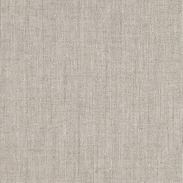
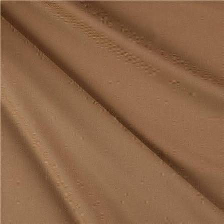
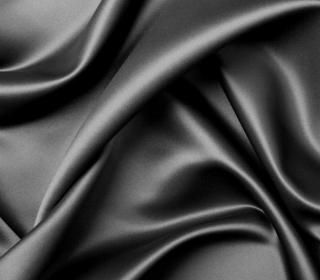
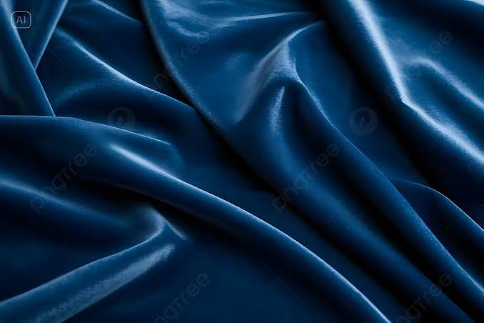
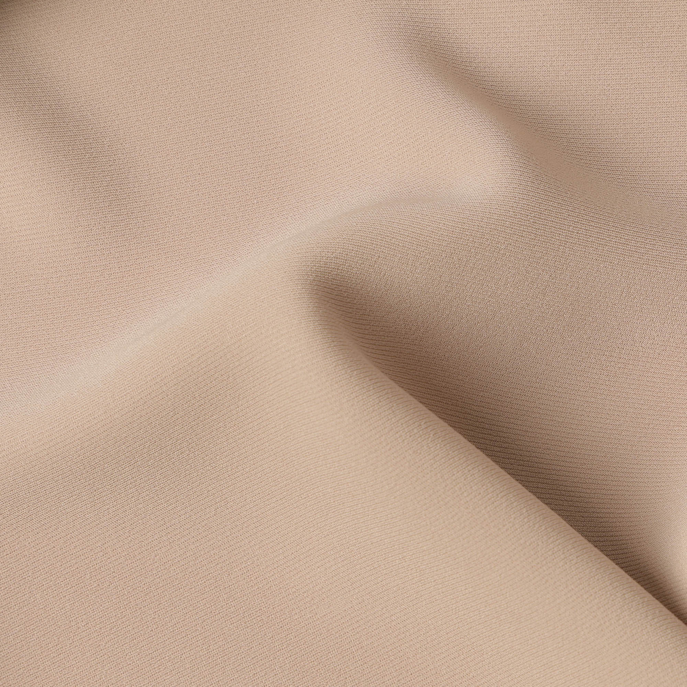
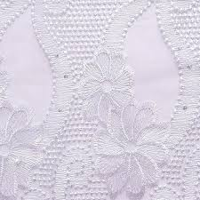
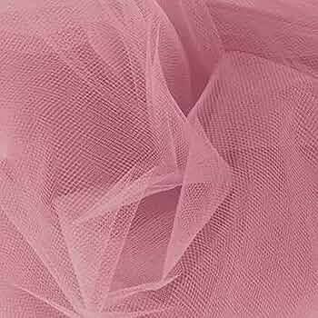
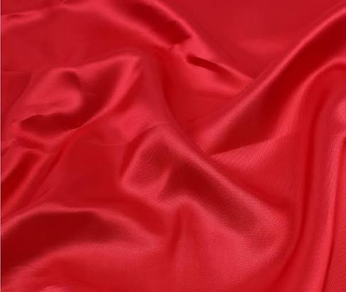

اكتشف مجموعتنا المتنوعة من الأقمشة واختر الخامة المناسبة لك.
| الصورة | اسم القماش | الوصف | السعر للمتر | الطلب |
|---|---|---|---|---|
|
القطن (Cotton) | قماش طبيعي ناعم ومريح للاستخدام اليومي. | 120 جنيه | اطلب الآن |
 |
الكتان (Linen) | قماش طبيعي خفيف ومناسب للملابس الصيفية. | 180 جنيه | اطلب الآن |
|
الحرير (Silk) | قماش ناعم ولامع للملابس الأنيقة. | 250 جنيه | اطلب الآن |
|
الجينز (Denim) | قماش متين مناسب للبناطيل والسترات. | 200 جنيه | اطلب الآن |
 |
الصوف (Wool) | قماش دافئ يستخدم في الملابس الشتوية. | 220 جنيه | اطلب الآن |
|
الشيفون (Chiffon) | قماش خفيف وشفاف يستخدم في الفساتين. | 130 جنيه | اطلب الآن |
 |
الستان (Satin) | قماش ناعم ذو سطح لامع ومظهر أنيق. | 160 جنيه | اطلب الآن |
 |
المخمل (Velvet) | قماش ناعم ذو ملمس وبرّي مميز. | 230 جنيه | اطلب الآن |
 |
الكريب (Crepe) | قماش ذو ملمس مميز يستخدم في الملابس. | 170 جنيه | اطلب الآن |
 |
الدانتيل (Lace) | قماش مزخرف يستخدم في الفساتين والملابس الأنيقة. | 210 جنيه | اطلب الآن |
 |
التل (Tulle) | قماش شبكي خفيف يستخدم في الفساتين والزينة. | 100 جنيه | اطلب الآن |
|
الأورجانزا (Organza) | قماش خفيف وشفاف يتميز بملمسه المتماسك. | 190 جنيه | اطلب الآن |
 |
الفيسكوز (Viscose) | قماش ناعم ينسدل بشكل جيد ومناسب للملابس. | 140 جنيه | اطلب الآن |
جميع الأسعار المعروضة تجريبية.
شاهد العروض والخصومات